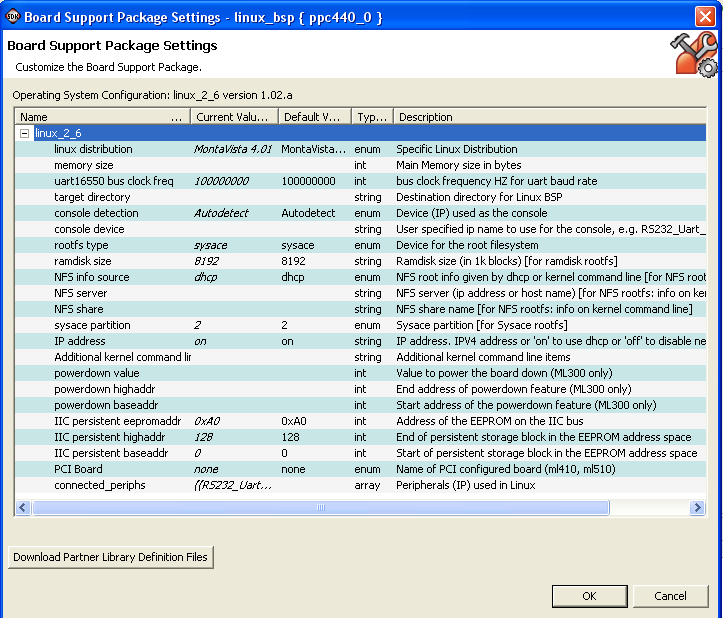

Board Support Packages
When you create a Board Support Package (BSP), you can configure the BSP parameters in the Board Support Package Settings dialog box.
You can also configure BSP settings by right-clicking a BSP in your project and selecting Board Support Package Settings.

The Board Support Package Settings window contains the following functions.
| Name | Function |
|---|---|
| Operating System Configuration | Specifies the name and version of the BSP. |
| Name | Name of the Parameter. |
| Current Value | User-specified value. Contains the default value if you do not specify a value. |
| Default Value | Default value of the parameter. |
| Type | Parameter value type, such as string, integer, bool, array, and peripheral instance. |
| Description | Description of the parameter. |
Click the Download Partner Library Definition Files button to open a Xilinx page containing partner information for various versions of libraries in your default browser.

Board Support Packages

Configuring a Board Support Package

New Board Support Package Project dialog box
Copyright © 1995-2009 Xilinx, Inc. All rights reserved.